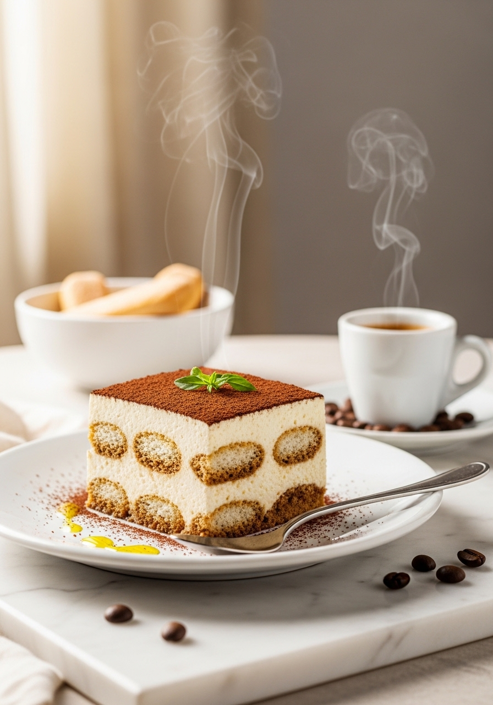
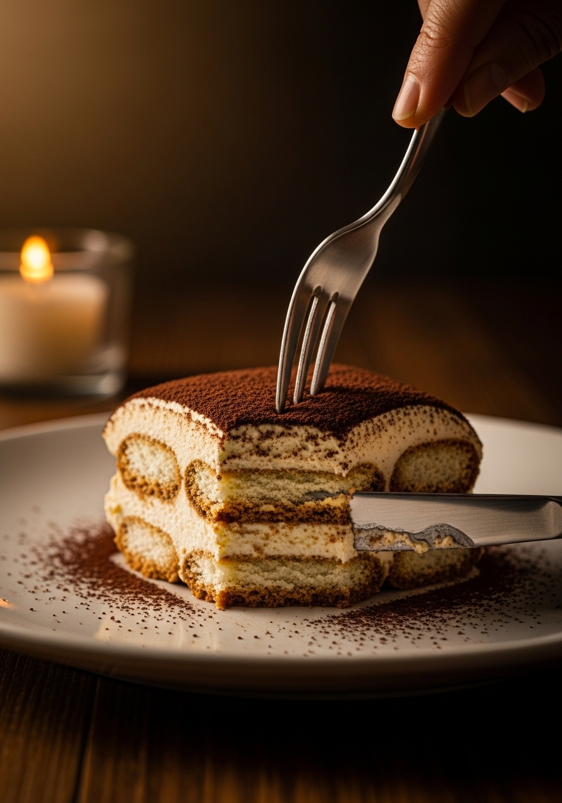

Questo è il vero tiramisù — quello che gli italiani preparano davvero. Strati di savoiardi imbevuti di espresso, una ricca crema al mascarpone e un'abbondante spolverata di cacao amaro. Niente cottura, niente gelatina, niente scorciatoie. Solo i sei ingredienti che hanno reso questo dolce famoso in tutto il mondo.

Senza CotturaL'errore più comune del tiramisù è inzuppare troppo i biscotti. Una veloce immersione — un secondo per lato — è tutto quello che serve. Assorbono umidità mentre il dolce si raffredda in frigo, e quando lo servi saranno perfettamente morbidi. Inzupparli troppo ti darà un pasticcio bagnato e sfaldante. L'altro segreto è la pazienza: almeno quattro ore in frigo, tutta la notte se possibile. È qui che avviene la magia — gli strati si fondono e si compattano in quei bellissimi strati distinti che sono il marchio di un gran tiramisù.
Il tiramisù italiano autentico usa solo il mascarpone — mai la panna montata. Il mascarpone è un formaggio cremoso italiano ultra-ricco con un contenuto di grassi di circa il 75%, che dona alla crema una consistenza incredibilmente densa e lussuosa. Alcune ricette moderne sostituiscono la panna montata o mischiano entrambe, creando un risultato più leggero e meno ricco. Per l'esperienza del tiramisù classico, usa del vero mascarpone di un marchio italiano se riesci a trovarlo. La differenza di gusto e consistenza è significativa.
Ingredienti
Procedimento

Il tiramisù è il dolce da preparare in anticipo per eccellenza. Si conserva perfettamente in frigo fino a 3 giorni coperto con pellicola. Il sapore migliora il secondo giorno. Puoi anche congelare le porzioni individuali fino a 1 mese — scongelale in frigo per alcune ore prima di servire. Non spolverizzare con il cacao fino al momento di servire.
Assolutamente. Ometti semplicemente il rum o il Marsala. Il tiramisù sarà comunque delizioso — il caffè e il mascarpone offrono più che abbastanza sapore. Puoi aggiungere un cucchiaino di estratto di vaniglia all'espresso per una maggiore profondità.
Fino a 3 giorni coperto ermeticamente in frigo. Il sapore raggiunge il suo apice il secondo giorno mentre gli strati si amalgamano. Dopo 3 giorni i biscotti possono diventare troppo morbidi e la crema potrebbe iniziare a cedere.
Il formaggio spalmabile può funzionare come sostituto d'emergenza, ma il sapore e la consistenza saranno notevolmente diversi — più acidi e più sodi. Per il miglior risultato, usa sempre del vero mascarpone italiano.
Questa ricetta usa un metodo semi-cotto: sbattere vigorosamente i tuorli con lo zucchero crea una base densa stile zabaione più sicura delle uova semplicemente crude. Per uova completamente cotte, scalda i tuorli e lo zucchero a bagnomaria a 70°C prima di sbattere.
I savoiardi sono tradizionali, ma il pan di spagna tagliato a strisce funziona come sostituto. Alcune ricette usano i pavesini per una consistenza più fine. Evita le torte morbide — hai bisogno di qualcosa di abbastanza sodo da mantenere la forma dopo l'inzuppamento.